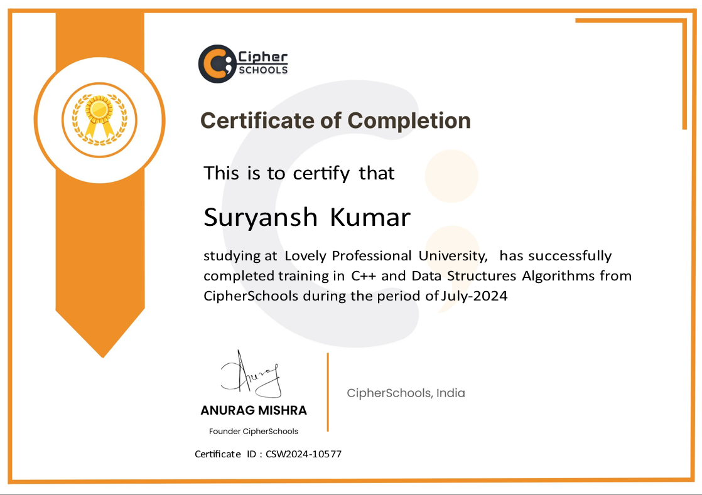
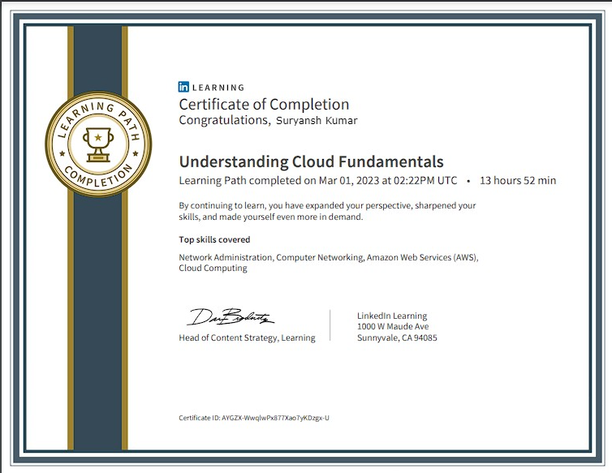

Certificates

Web Development
Full Stack Web Development certification covering modern web technologies, best practices, and hands-on project development.

Google Digital Marketing
Advanced Digital Marketing Certified Course with SEO management Skills.

UI/UX Design
Professional UI/UX Design certification focusing on user-centered design principles and modern interface design techniques.